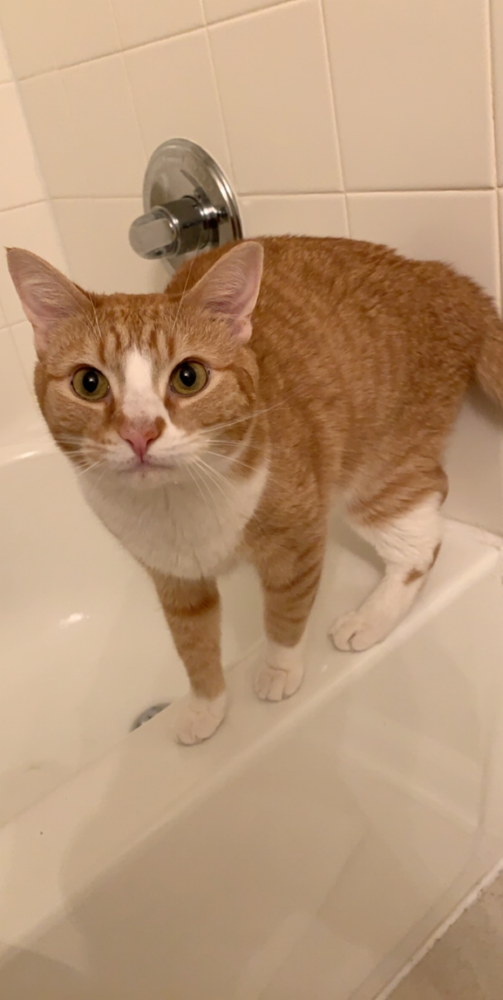

My name is Jason Coleman, I am a (former) Network Engineer from Charlottesville Virginia. I am currently taking classes at the University of Richmond for Software Developement, and spend most of my free time studying, fly-fishing, snow boarding or relaxing with my family. I have a cat named Oliver who is a jerk. Here's a pic of Ollie! 
I am orginally from Baltimore, Maryland, where i grew up not too far from the Harbor. The move from baltimore to Charlottesville was a drastic life change for me and my two siblings, Tyler(24m) and Logan(16f). My dad had started a new business and wanted to move us to a safer and more comfortable place, and we've been here since then (roughly 10 years ago now). I enjoy Virginia a lot more, there's so much nature and so many outdoor activities, I remember when we moved here and my brother and i were shocked at our massive forest in the back yard (which was really only a half an acre).
About a year ago now I met my amazing girlfriend, Christyn. She is my rock, and keeps me going even through the hardest times. My pursuit of education, and even going back to school and taking this class, can be credited to Christyn. She always encourages me to better myself, and I honestly don't know what I'd do without her. She's also cute as hell and a total goofball. It felt right to dedicate at least this small section to her, you're the best!